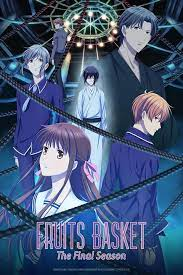
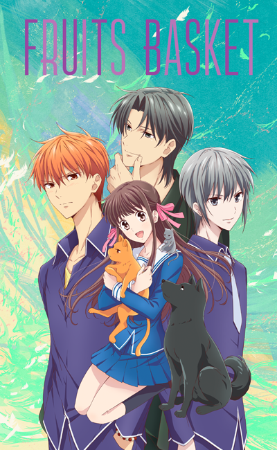
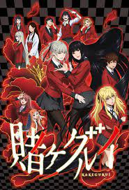

Gêneros
- Romance
- Comédia
- Game
Exemplos de animes
 
Sobre fruits basket:
Esse anime retrata a história de Tohru Honda,
que vai morar por acaso na casa da família Soma,
uma família onde esconde diversos segredos
algumas dessas pessoas são escolhidas para interpretar
um personagem do horóscopo chines

Sobre kakegurui:
Escola particular Kekegurui é a escola onde acontece os jogos de azar,
alunos jogam e apostam até suas vidas, porém a nova aluno entriga grêmio
estudantl fazendo jogarem juntos valendo tudo
| Processador |
Velocidade
(MHz) |
Preço de
lançamento |
Data de
lançamento |
Preço em
Agosto/2000 |
Queda % |
| AMD K-6 |
200 |
315 |
Abril/97 |
107 |
66 |
| AMD K-6 |
233 |
437 |
Maio/97 |
284 |
35 |
| Cyrix 6x86 |
200 |
240 |
Maio/97 |
188 |
22 |
Cyrix 6x86 |
233 |
320 |
Maio/97 |
290 |
9 |
| Intel Pentium II |
233 |
636 |
Maio/97 |
530 |
17 |
| Intel Pentium II |
266 |
775 |
Maio/97 |
699 |
10 |